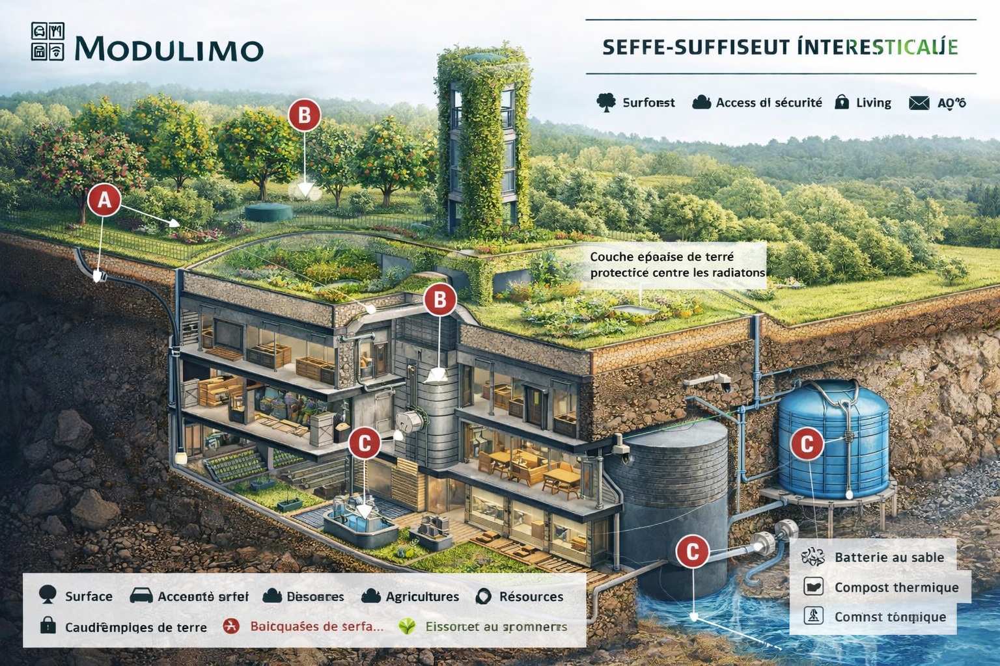

Bunker forestier autosuffisant
Écosystème souterrain pour 30 personnes • Surface discrète • Production alimentaire • Énergie et recyclage
Systèmes
- Forêt nourricière et surface discrète
- Trois escaliers sécurisés
- Habitation et noyau central
- Agriculture, aquaponie et élevages
- Eau, chaleur et énergie
